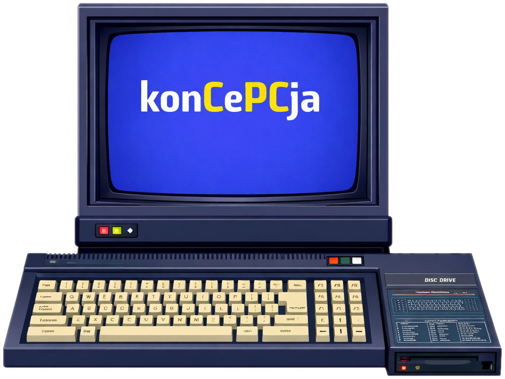
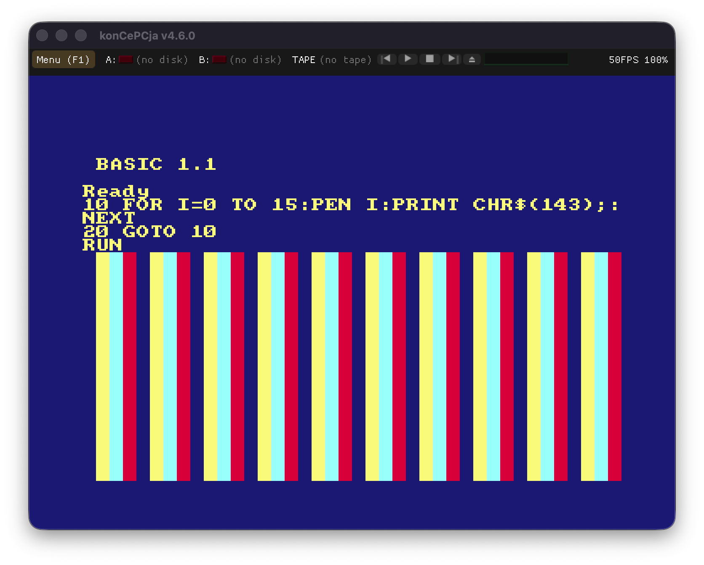
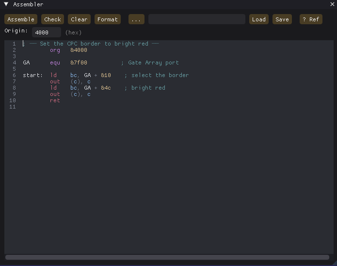
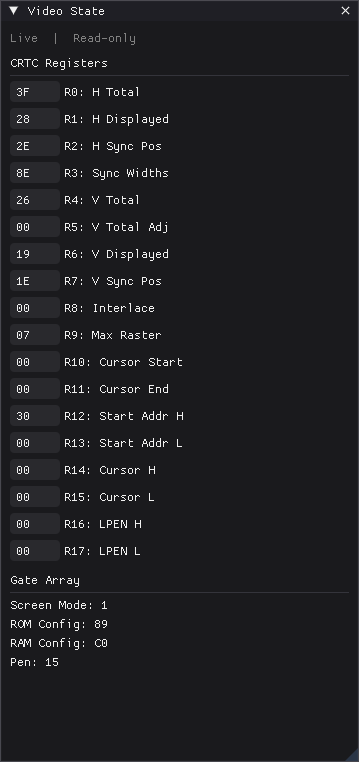

The complete CPC, faithfully reborn for your modern machine
Every chip. Every quirk. Every colour. Plus a debugger that would have made 1985 weep with joy.

konCePCja is a from-the-silicon-up emulator of the Amstrad CPC — the 464, the 664, the 6128, and the snazzy 6128 Plus — built on the venerable Caprice32 core and dragged kicking and screaming into the present day with a modern interface and a developer's toolkit that is, frankly, the dog's danglies.
It doesn't just pretend to be a CPC. The Z80A runs the full instruction set. The Gate Array does its palette and ROM-banking conjuring. The CRTC — all four flavours, 6845 through to the AMS40489 — keeps the raster honest. The PSG sings through three channels and an envelope generator, and the uPD765 floppy controller spins your discs exactly as cantankerously as the real thing.

"A debugger that would have made 1985 weep with joy."
Press F12 and the curtain lifts. A full debugger swings into view: live Z80 registers, a disassembler that follows the program counter, a hex editor over all 64K, breakpoints and watchpoints, an I/O-port trap, and live windows onto the video and audio hardware. There's even an integrated Z80 assembler — type your code, hit Assemble, and watch it run.

Want to drive it from a script? An IPC protocol on a TCP port lets you pause, poke, step, set breakpoints, and grab screenshots from the outside — perfect for automated testing or a cheeky bit of reverse-engineering. There's a telnet console that mirrors the CPC's text output, and an M4 Board with its own web file-manager.

And the peripherals! The Digiblaster and AmDrum DACs, the Dobbertin SmartWatch, the AMX and Symbiface II mice, an IDE hard disc, a real-time clock, the M4 Board, a light gun — even procedurally-generated disc-drive clatter for that authentic whirr-chunk. It loads DSK, CDT, SNA, CPR and IPF, runs on Mac, Linux and Windows, and costs precisely nothing.